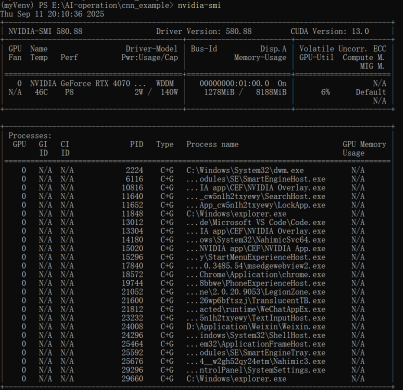
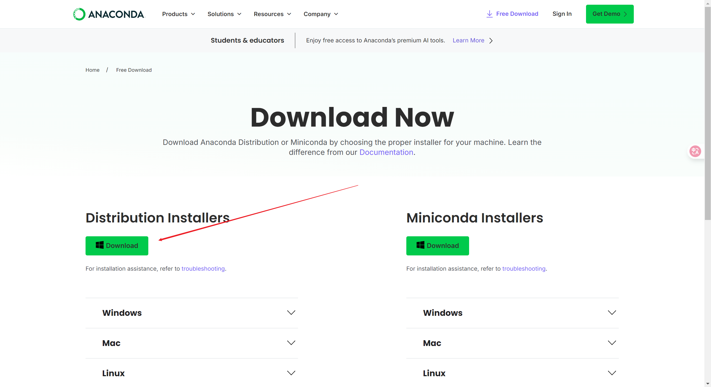
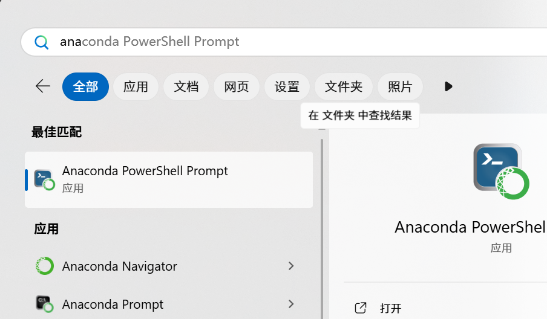
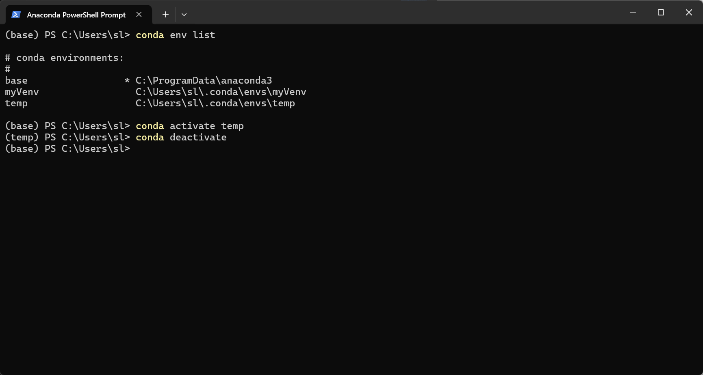
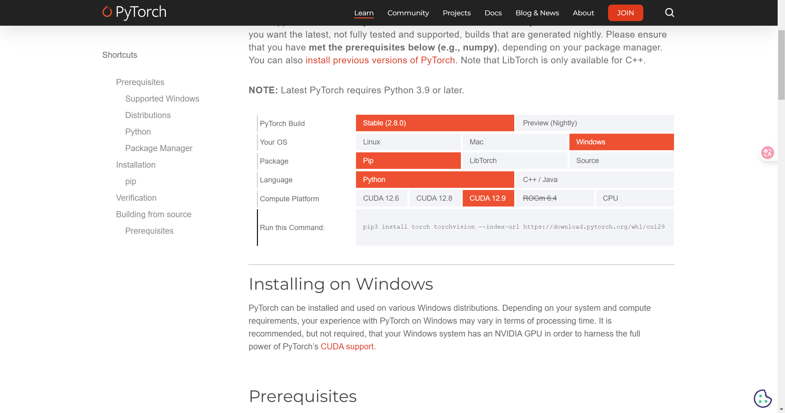

从零开始搭建pytorch环境
前言
在最近的人工智能课程上，我完成了从零搭建人工智能运行环境以及测试的相关流程，已经写完了实验报告，但是因为教师要求将自己的思考过程写在报告里，直接将报告的内容搬过来并不是一个好的选择，于是我决定重新写这一篇文章，力求用最简单、清晰的流程让你完成环境的搭建。
总览
本教程包含：
- 显卡驱动的安装
- CUDA的安装
- Anaconda的安装及部分教程
- pytorch的安装
- pytorch的测试
适用与想在Windows操作环境下使用显卡训练pytorch相关模型的学生。
Windows环境下的操作都相对简单，所以不要担心。
本人刚刚进行人工智能相关的学习，如有错误，还望指出。
显卡驱动的安装
这里主要针对N卡的显卡驱动，其他显卡驱动请查看其他文章。 一般来说，电脑是自带有英伟达显卡驱动的，可以通过在命令提示框运行以下命令来查看是否已经安装显卡驱动。
|
|
如果已经正确安装英伟达驱动，你将看到以下界面。  如果没有，请自行前往英伟达官网或英伟达 App下载与安装对应版本的显卡驱动，知直到出现上述图片内容。
CUDA的安装
什么是CUDA
在正式安装CUDA之前，我们先来介绍一下什么CUDA。 CUDA(Compute Unified Device Architecture，计算统一设备架构)，是Nvidia开发的并行计算平台和编程模型，核心作用是让开发者能够利用Nvidia GPU的并行计算能力。在pytorch中，CUDA可以帮助pytorch调用GPU加速矩阵运算，所以是我们接下来运行pytorch项目的关键工具。
安装CUDA
首先，根据刚才使用的nvidia-smi获得的信息，我们需要知道当前显卡驱动能支持的最高版本的CUDA，根据刚才的图片，可以知道，我的显卡驱动最高支持到13.0版本。
我们在这里只需要记住这个版本号即可，我不会让你们前往Nvidia挂网下载对应版本的CUDA工具包，关于原因，相信你在下文中会清楚的。
Anaconda的安装
什么是Anaconda
准确来说，Anaconda是一个工具包，其包含Conda，Anaconda Navigator与一些常用的数据科学库。
Conda，是一个环境与包管理工具，类似于npm与pip，它可以管理当前项目所需要的包/依赖，而Conda比pip更高级的地方是，它可以通过虚拟环境管理更多版本的Python解释器！真正让我们能够一个项目对应一个解释器与依赖。
这里不再解释什么是虚拟环境，为什么要有虚拟环境，网上的解释或如今的AI能够解决我们的大部分问题。
当然如果你仅仅是想要稍微尝试一下torch，你当然可以不安装Anaconda而仅仅使用全局环境下的python解释器，当然我不推荐你这么做。
Anaconda Navigator，为初识Conda的学习者提供了图形化界面，它能帮助我们创建、管理虚拟环境，打开对应IDE等等。
安装Anaconda
对Windows环境，我们直接前往Anaconda官网，界面如下图。
点击"Get Started"注册并登录后就可以进入下载页了，选择Windows版本进行下载。
当然如果你不想登录，在地址栏后面添加"/success"就可以跳过验证(doge)。
接下来按照指引完成安装即可，需要注意的是，Anaconda已经不推荐将其添加到环境变量了，我们听取它的建议。
安装好后，你在开始菜单下，应该可以看见这样的几个程序，如图。
这样就说明我们已经安装好了。
Anaconda基础教程
打开Anaconda PowerShell Prompt或者Anaconda Prompt，Anaconda将自动为你启用基虚拟环境，即在路径前可以看到(base)字样。该虚拟环境自带python 3.13。
为了以后方便，我们创建一个新的虚拟环境。使用下面的命令创建新的环境。
|
|
使用下面的命令激活/切换到其他虚拟环境.
|
|
在上述命令执行成功后，你应该可以看到(base)变成了(<env-name>)。
使用下面的命令关闭当前虚拟环境。
|
|
conda会自动切换回base虚拟环境。
你也可以使用下面的命令查看当前已经创建了哪些虚拟环境。
|
|
效果如图。
当然，你完全可以使用Anaconda Navigator的图形化界面！
下载Python
我们假设你已经创建好了一个虚拟环境，这里我用temp统称。
现在，我们激活到temp环境下，输入以下命令安装python。
|
|
这里我们下载3.12版本的python，其他版本的应该也可以，为了不必要的麻烦，还请跟着3.12做一遍。
安装好后，运行以下命令检查是否安装成功。
|
|
如果成功返回python版本号，说明已经安装成功啦！
使用以下命令查看当前环境下已经下载了哪些东西。
|
|
安装torch
前面说到，我没有让你们下载单独CUDA，因为当前的torch包中已经预编译了相应的CUDA，就算我们安装了CUDA，torch也不会使用我们单独安装的CUDA，不如不装，但是，我希望你们能够了解CUDA在这里面的作用。
如果你使用以下命令，那么pip会帮你安装仅支持CPU运行的torch的包，这里列出，不推荐。
|
|
我们下载支持CUDA（已经预编译CUDA，支持GPU运行）的torch包。 前往torch官网下载页，选择适合您机器的版本，复制下面的命令键入到命令行中执行即可。
推荐pip，如果您的显卡驱动不支持表中的CUDA版本，建议安装更高版本的显卡驱动，虽然你也可以安装torch更早的版本。
检测是否可用
在命令行中键入以下命令查看当前python已经下载哪些包。
|
|
你将看到torch与torchvision在列表中。
接下来，启动python的命令行模式。
|
|
依次执行。
|
|
|
|
如果返回的结果是True的话，恭喜你，你已经完成了torch的安装，不然，请您检查前面的步骤。
运行torch的示例代码
这里假设您会使用git命令以及知道如何使用虚拟环境下的python执行python文件。
项目地址为cnn_example。
这里提醒一下，请按照项目的README顺序执行代码。
另外，项目中的部分语法与现在的有些不同，如果你没有python基础，看到报错信息后可以将报错信息复制给AI，按照AI的修改建议修改代码即可。